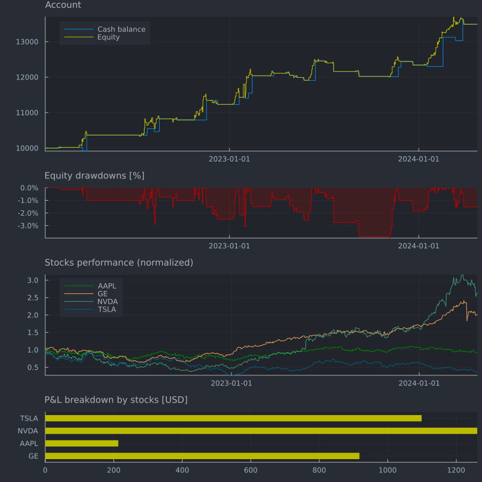

Portfolio trading strategy example
This example demonstrates how to run a backtest with multiple assets, i.e. trading a portfolio of assets.
The price data is loaded from a CSV file containing daily close prices for the stocks AAPL, NVDA, TSLA, and GE, ranging from 2022-01-03 to 2024-04-22.
The strategy buys one stock if the last 5 days were positive, and sells it again if the last 2 days were negative. Each trade is executed at a commission of 0.1%.
When missing data points are detected for a stock, all open positions for that stock are closed. Logic of this type is common in real-world strategies and harder to implement in a vectorized way, showcasing the flexibility of Fastback.
The account equity, balance and drawdowns are collected for every day and plotted at the end using the Plots package. Additionally, the performance and P&L breakdown of each stock is plotted and statistics (avg. P&L, worst P&L, best P&L, win rate) are printed.
using Fastback
using Dates
using CSV
using DataFrames
data_path = "../data/stocks_1d.csv";
# if data path doesn't exist, try to change working directory
isfile(data_path) || cd("src/examples")
# load CSV daily stock data for symbols AAPL, NVDA, TSLA, GE
df_csv = DataFrame(CSV.File(data_path; dateformat="yyyy-mm-dd HH:MM:SS"));
df_csv.symbol = Symbol.(df_csv.symbol); # convert string to symbol type
df = unstack(df_csv, :dt_close, :symbol, :close) # pivot long to wide format
symbols = Symbol.(names(df)[2:end]);
# print summary
describe(df)
# create trading account with $10'000 start capital
acc = Account();
deposit!(acc, Cash(:USD), 10_000.0);
# register instruments for all symbols
instruments = map(sym -> Instrument(sym, sym, :USD), symbols);
register_instrument!.(Ref(acc), instruments);
# data collector for account balance, equity and drawdowns (sampling every day)
collect_balance, balance_data = periodic_collector(Float64, Day(1));
collect_equity, equity_data = periodic_collector(Float64, Day(1));
collect_drawdown, drawdown_data = drawdown_collector(DrawdownMode.Percentage, Day(1));
function open_position!(acc, inst, dt, price)
# invest 20% of equity in the position
qty = 0.2equity(acc, :USD) / price
order = Order(oid!(acc), inst, dt, price, qty)
fill_order!(acc, order, dt, price; commission_pct=0.001)
end
function close_position!(acc, inst, dt, price)
# close position for instrument, if any
pos = get_position(acc, inst)
has_exposure(pos) || return
order = Order(oid!(acc), inst, dt, price, -pos.quantity)
fill_order!(acc, order, dt, price; commission_pct=0.001)
end
# loop over each row of DataFrame
for i in 6:nrow(df)
row = df[i, :]
dt = row.dt_close
# loop over all instruments and check strategy rules
for inst in instruments
price = row[inst.symbol]
window_open = @view df[i-5:i, inst.symbol]
window_close = @view df[i-2:i, inst.symbol]
# close position of instrument if missing data
if any(ismissing.(window_open))
close_price = get_position(acc, inst).avg_price
close_position!(acc, inst, dt, close_price)
continue
end
if !is_exposed_to(acc, inst)
# buy if last 5 days were positive
all(diff(window_open) .> 0) && open_position!(acc, inst, dt, price)
else
# close position if last 2 days were negative
all(diff(window_close) .< 0) && close_position!(acc, inst, dt, price)
end
# update position and account P&L
update_pnl!(acc, inst, price, price)
end
# close all positions at the end of backtest
if i == nrow(df)
for inst in instruments
price = row[inst.symbol]
close_position!(acc, inst, dt, price)
end
end
# collect data for plotting
if should_collect(equity_data, dt)
equity_value = equity(acc, :USD)
collect_balance(dt, cash_balance(acc, :USD))
collect_equity(dt, equity_value)
collect_drawdown(dt, equity_value)
end
end
# print account summary
show(acc)━━━━━━━━━━━━━━━━━━━━━━━━━━━━━━━ ACCOUNT SUMMARY ━━━━━━━━━━━━━━━━━━━━━━━━━━━━━━━
Cash balances (1)
┌─────┬──────────┐
│ │ Value │
├─────┼──────────┤
│ USD │ 13490.65 │
└─────┴──────────┘
Equity balances (1)
┌─────┬──────────┐
│ │ Value │
├─────┼──────────┤
│ USD │ 13490.65 │
└─────┴──────────┘
Positions (0)
Trades (76)
┌────┬────────┬─────────────────────┬────────┬────────┬────────┬────┬────┬──────
│ ID │ Symbol │ Date │ Qty │ Filled │ Price │ TP │ SL │ Ccy ⋯
├────┼────────┼─────────────────────┼────────┼────────┼────────┼────┼────┼──────
│ 1 │ GE │ 2022-02-02 21:00:00 │ 26.32 │ 26.32 │ 75.98 │ — │ — │ USD ⋯
│ 2 │ GE │ 2022-02-09 21:00:00 │ -26.32 │ -26.32 │ 76.91 │ — │ — │ USD ⋯
│ 3 │ GE │ 2022-03-14 20:00:00 │ 27.95 │ 27.95 │ 71.71 │ — │ — │ USD ⋯
│ 4 │ AAPL │ 2022-03-21 20:00:00 │ 12.34 │ 12.34 │ 163.51 │ — │ — │ USD ⋯
│ 5 │ NVDA │ 2022-03-21 20:00:00 │ 7.54 │ 7.54 │ 267.02 │ — │ — │ USD ⋯
│ 6 │ TSLA │ 2022-03-21 20:00:00 │ 6.56 │ 6.56 │ 307.05 │ — │ — │ USD ⋯
│ 7 │ NVDA │ 2022-03-23 20:00:00 │ -7.54 │ -7.54 │ 256.03 │ — │ — │ USD ⋯
│ 8 │ GE │ 2022-03-28 20:00:00 │ -27.95 │ -27.95 │ 71.36 │ — │ — │ USD ⋯
│ 9 │ AAPL │ 2022-03-31 20:00:00 │ -12.34 │ -12.34 │ 172.64 │ — │ — │ USD ⋯
│ 10 │ TSLA │ 2022-03-31 20:00:00 │ -6.56 │ -6.56 │ 359.20 │ — │ — │ USD ⋯
│ 11 │ AAPL │ 2022-07-08 20:00:00 │ 14.24 │ 14.24 │ 145.59 │ — │ — │ USD ⋯
│ 12 │ NVDA │ 2022-07-19 20:00:00 │ 12.28 │ 12.28 │ 169.75 │ — │ — │ USD ⋯
│ 13 │ TSLA │ 2022-07-19 20:00:00 │ 8.49 │ 8.49 │ 245.53 │ — │ — │ USD ⋯
│ 14 │ GE │ 2022-07-21 20:00:00 │ 40.05 │ 40.05 │ 52.91 │ — │ — │ USD ⋯
│ 15 │ AAPL │ 2022-07-25 20:00:00 │ -14.24 │ -14.24 │ 151.44 │ — │ — │ USD ⋯
│ ⋮ │ ⋮ │ ⋮ │ ⋮ │ ⋮ │ ⋮ │ ⋮ │ ⋮ │ ⋮ ⋱
│ 62 │ GE │ 2023-11-22 21:00:00 │ -21.25 │ -21.25 │ 119.52 │ — │ — │ USD ⋯
│ 63 │ NVDA │ 2023-11-22 21:00:00 │ -5.26 │ -5.26 │ 487.12 │ — │ — │ USD ⋯
│ 64 │ AAPL │ 2023-11-27 21:00:00 │ -13.58 │ -13.58 │ 189.55 │ — │ — │ USD ⋯
│ 65 │ NVDA │ 2023-12-18 21:00:00 │ 4.97 │ 4.97 │ 500.77 │ — │ — │ USD ⋯
│ 66 │ NVDA │ 2023-12-20 21:00:00 │ -4.97 │ -4.97 │ 481.11 │ — │ — │ USD ⋯
│ 67 │ GE │ 2024-01-10 21:00:00 │ 19.03 │ 19.03 │ 129.70 │ — │ — │ USD ⋯
│ 68 │ NVDA │ 2024-01-10 21:00:00 │ 4.54 │ 4.54 │ 543.50 │ — │ — │ USD ⋯
│ 69 │ GE │ 2024-01-16 21:00:00 │ -19.03 │ -19.03 │ 127.97 │ — │ — │ USD ⋯
│ 70 │ GE │ 2024-02-13 21:00:00 │ 18.50 │ 18.50 │ 141.77 │ — │ — │ USD ⋯
│ 71 │ NVDA │ 2024-02-16 21:00:00 │ -4.54 │ -4.54 │ 726.13 │ — │ — │ USD ⋯
│ 72 │ NVDA │ 2024-03-06 21:00:00 │ 3.03 │ 3.03 │ 887.00 │ — │ — │ USD ⋯
│ 73 │ NVDA │ 2024-03-11 20:00:00 │ -3.03 │ -3.03 │ 857.74 │ — │ — │ USD ⋯
│ 74 │ NVDA │ 2024-03-22 20:00:00 │ 2.89 │ 2.89 │ 942.89 │ — │ — │ USD ⋯
│ 75 │ GE │ 2024-03-25 20:00:00 │ -18.50 │ -18.50 │ 173.49 │ — │ — │ USD ⋯
│ 76 │ NVDA │ 2024-03-27 20:00:00 │ -2.89 │ -2.89 │ 902.50 │ — │ — │ USD ⋯
└────┴────────┴─────────────────────┴────────┴────────┴────────┴────┴────┴──────
3 columns and 46 rows omitted
━━━━━━━━━━━━━━━━━━━━━━━━━━━━━━━━━━━━━━━━━━━━━━━━━━━━━━━━━━━━━━━━━━━━━━━━━━━━━━━━Plot account balance, equity, drawdowns and stocks performance
using Plots, Query, Printf, Measures
theme(:juno; titlelocation=:left, titlefontsize=10, widen=false, fg_legend=:false)
# equity / cash balance
p1 = plot(
dates(balance_data), values(balance_data);
title="Account",
label="Cash balance",
linetype=:steppost,
yformatter=:plain,
color="#0088DD");
plot!(p1,
dates(equity_data), values(equity_data);
label="Equity",
linetype=:steppost,
color="#BBBB00");
# drawdowns
p2 = plot(
dates(drawdown_data), 100values(drawdown_data);
title="Equity drawdowns [%]",
legend=false,
color="#BB0000",
yformatter=y -> @sprintf("%.1f%%", y),
linetype=:steppost,
fill=(0, "#BB000033"));
# stocks performance
p3 = plot(
df.dt_close, df[!, 2] ./ df[1, 2];
title="Stocks performance (normalized)",
yformatter=y -> @sprintf("%.1f", y),
label=names(df)[2],
linetype=:steppost,
color=:green);
for i in 3:ncol(df)
plot!(p3,
df.dt_close, df[!, i] ./ df[1, i];
label=names(df)[i])
end
# P&L breakdown by stocks
pnl_by_inst = acc.trades |>
@groupby(_.order.inst.symbol) |>
@map({
symbol = key(_),
pnl = sum(getfield.(_, :realized_pnl))
}) |> DataFrame
p4 = bar(string.(pnl_by_inst.symbol), pnl_by_inst.pnl;
legend=false,
title="P&L breakdown by stocks [USD]",
permute=(:x, :y),
xlims=(0, size(pnl_by_inst)[1]),
yformatter=y -> @sprintf("%.0f", y),
color="#BBBB00",
linecolor=nothing,
bar_width=0.5)
p = plot(p1, p2, p3, p4;
layout=@layout[a{0.4h}; b{0.15h}; c{0.3h}; d{0.15h}],
size=(800, 800), margin=0mm, left_margin=5mm);
p
Calculate statistics per stock
Calculates summary statistics for each stock. Using the Query.jl package, all trades are first grouped by instrument symbol, then average P&L, worst P&L, best P&L, and win rate are calculated. Finally, the results are piped into a DataFrame and printed using the PrettyTables.jl package.
using PrettyTables
df = acc.trades |>
@groupby(_.order.inst.symbol) |>
@map({
symbol = key(_),
avg_pnl = sum(getfield.(_, :realized_pnl)) / length(_),
worst_pnl = minimum(getfield.(_, :realized_pnl)),
best_pnl = maximum(getfield.(_, :realized_pnl)),
win_rate = round.(count(getfield.(_, :realized_pnl) .> 0) / count(is_realizing.(_)), sigdigits=2),
}) |> DataFrame
pretty_table(df; column_labels=["Symbol", "Avg P&L", "Worst P&L", "Best P&L", "Win Rate"])┌────────┬─────────┬───────────┬──────────┬──────────┐
│ Symbol │ Avg P&L │ Worst P&L │ Best P&L │ Win Rate │
├────────┼─────────┼───────────┼──────────┼──────────┤
│ GE │ 38.2206 │ -111.654 │ 583.566 │ 0.42 │
│ AAPL │ 26.6522 │ -135.763 │ 166.275 │ 0.75 │
│ NVDA │ 48.512 │ -119.529 │ 825.877 │ 0.54 │
│ TSLA │ 61.0459 │ -236.928 │ 552.412 │ 0.56 │
└────────┴─────────┴───────────┴──────────┴──────────┘